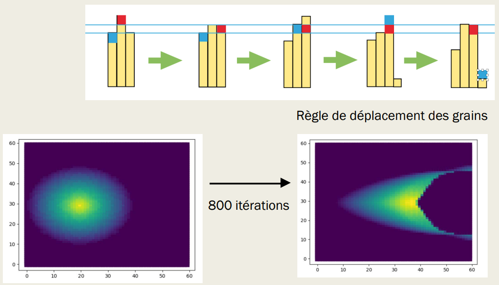

Simulation informatique
La modélisation informatique est aussi une possibilité très pertinente
pour essayer d’étudier le mouvement des dunes et pour prévoir leur
déplacement dans le désert.
Nous avons cherché, à partir de règles
simples, à créer un programme python nous permettant d’étudier ces
déplacements de dunes. Notre modélisation s’effectue à partir d’un système
de tableau de nombres/matrices . A chaque case du tableau est associé un
nombre qui donne la hauteur de la pile de sable sur la case.
> Une première
fonction, tas conique, nous permet de créer un tas initial comme nous
l’avons fait dans notre montage expérimental. Nous avons ensuite élaboré
une règle simple permettant de simuler le déplacement des grains de sables
lié à l’écoulement du vent sur le tas :
> Une fonction
règle_unidirectionnelle qui déplace un grain de sable d’une pile sur la
pile derrière elle par rapport à la direction du vent selon deux
conditions : si la pile de devant est strictement plus petite que la pile
étudiée et la pile arrière est de taille au plus : taille de la pile +1
> Une fonction effondrement qui simule l’effondrement des grains sur la face
d’avalanche en mesurant la différence de hauteur entre une colonne et la
suivante. Si celle-ci est positive, un nombre au hasard de grains tombe
sur la colonne qui suit.

Retour Sommaire
Vers prochaine page